Data visualization with ggplot2
** The structure and much of the content in this module was borrowed from Software Carpentry’s novice R Bootcamp material (Copyright (c) Software Carpentry), which they make available for reuse under the Creative Commons Attribution (CC_BY) license.
Basic plotting
R’s base (built-in) plotting functions are powerful and very flexible, but not overly user friendly. For simple exploratory plots that don’t need to look nice, they are useful. They are generally specified as plot(x, y, ...)
plot(dat$Sepal.Width, dat$Sepal.Length, type="p", col=dat$Species)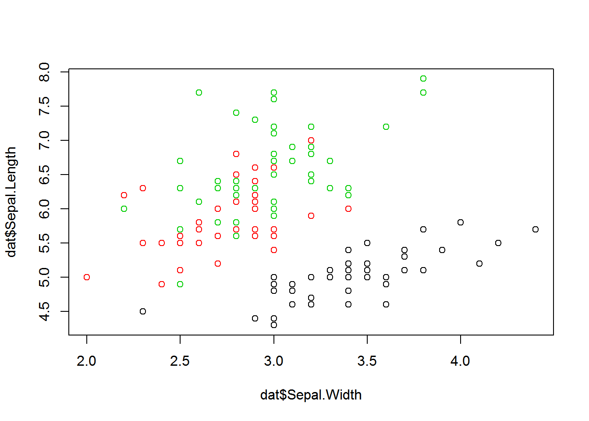
You can also specify them in a formula format plot(y ~ x, data='', ...)
plot(Sepal.Length ~ Sepal.Width, data=dat, col=Species)boxplot(Sepal.Length ~ Species, data=dat)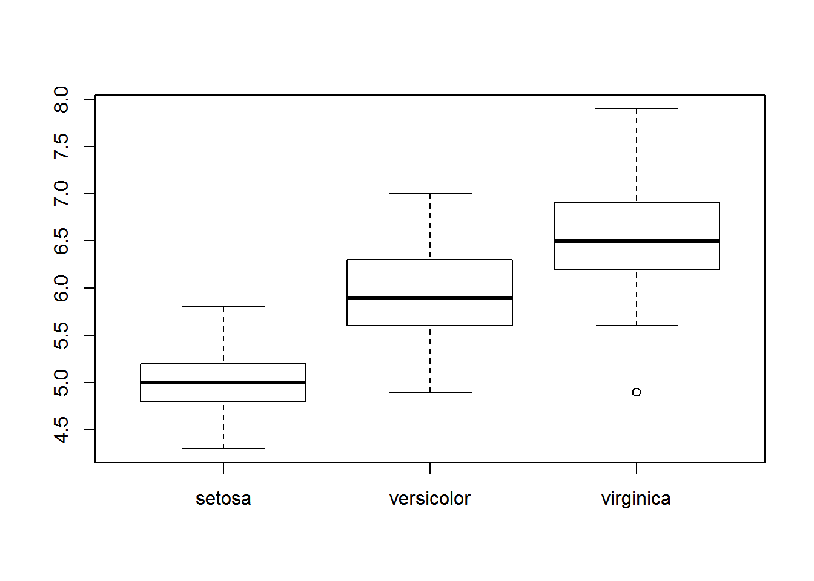
For more advanced (and easier) plotting, we’re going to use another package by Hadley Wickham, the same person who developed dplyr
ggplot2
The Diamonds dataset
Now let’s look at a bigger dataset. We’re going to be using a data visualization package called ggplot2 for drawing the plots, and the ggplot2 package comes with some data we’re going to use for this example.
Recall how to install and load packages. Install the package if you haven’t already:
# Only need to do this once
install.packages("ggplot2")Then load it:
library(ggplot2)Now let’s load the diamonds dataset and take a look at the first few rows and it’s structure with commands we learned previously. To learn more about this dataset you can also run ?diamonds.
data(diamonds)
head(diamonds)## carat cut color clarity depth table price x y z
## 1 0.23 Ideal E SI2 61.5 55 326 3.95 3.98 2.43
## 2 0.21 Premium E SI1 59.8 61 326 3.89 3.84 2.31
## 3 0.23 Good E VS1 56.9 65 327 4.05 4.07 2.31
## 4 0.29 Premium I VS2 62.4 58 334 4.20 4.23 2.63
## 5 0.31 Good J SI2 63.3 58 335 4.34 4.35 2.75
## [ reached getOption("max.print") -- omitted 1 row ]str(diamonds)## 'data.frame': 53940 obs. of 10 variables:
## $ carat : num 0.23 0.21 0.23 0.29 0.31 0.24 0.24 0.26 0.22 0.23 ...
## $ cut : Ord.factor w/ 5 levels "Fair"<"Good"<..: 5 4 2 4 2 3 3 3 1 3 ...
## $ color : Ord.factor w/ 7 levels "D"<"E"<"F"<"G"<..: 2 2 2 6 7 7 6 5 2 5 ...
## $ clarity: Ord.factor w/ 8 levels "I1"<"SI2"<"SI1"<..: 2 3 5 4 2 6 7 3 4 5 ...
## $ depth : num 61.5 59.8 56.9 62.4 63.3 62.8 62.3 61.9 65.1 59.4 ...
## $ table : num 55 61 65 58 58 57 57 55 61 61 ...
## $ price : int 326 326 327 334 335 336 336 337 337 338 ...
## $ x : num 3.95 3.89 4.05 4.2 4.34 3.94 3.95 4.07 3.87 4 ...
## $ y : num 3.98 3.84 4.07 4.23 4.35 3.96 3.98 4.11 3.78 4.05 ...
## $ z : num 2.43 2.31 2.31 2.63 2.75 2.48 2.47 2.53 2.49 2.39 ...From this we can see this dataset has prices of nearly 54,000 diamonds along with various features about the diamonds, such as the weight, the quality of the cut, the color, the clarity, and measurements of various dimensions.
If we wanted to do some exploratory data analysis we might start by plotting the price versus the weight of the diamond using base graphics.
plot(price ~ carat, data=diamonds)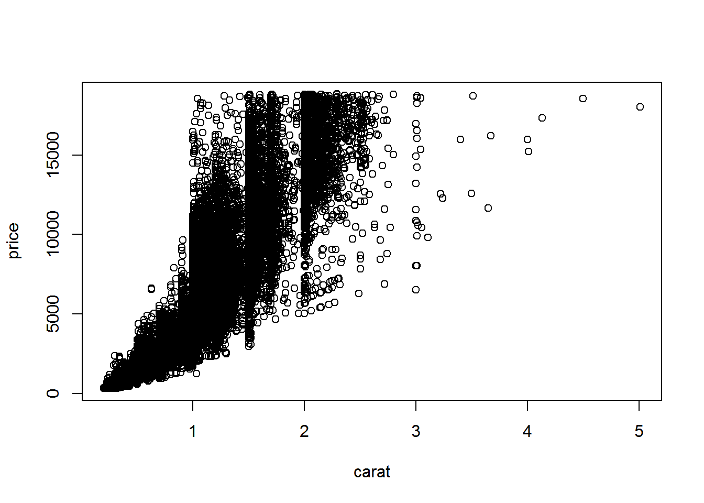
As we would expect there is definitely a relationship between the size of the diamond and its cost, but how do the other variables (cut, color, clarity) affect the price? We could examine the interrelationships of all these variables using base R graphics, but it could become extremely cumbersome.
ggplot2 is a widely used R package that extends R’s visualization capabilities. It takes the hassle out of things like creating legends, mapping other variables to scales like color, or faceting plots into small multiples. We’ll learn about what all these things mean shortly. To start with, let’s produce the same plot as before, but this time using ggplot2.
ggplot2 and the Grammar of Graphics
The ggplot2 package provides an R implementation of Leland Wilkinson’s Grammar of Graphics (1999). The Grammar of Graphics challenges data analysts to think beyond the garden variety plot types (e.g. scatter-plot, barplot) and to consider the components that make up a plot or graphic, such as how data are represented on the plot (as lines, points, etc.), how variables are mapped to coordinates or plotting shape or colour, what transformation or statistical summary is required, and so on. Specifically, ggplot2 allows users to build a plot layer-by-layer by specifying:
- The data, plus some aesthetics that map variables in the data to axes on the plot or to size, shape, color, etc.,
- a geom, which specifies how the data are represented on the plot (points, lines, bars, etc.),
- a stat, a statistical transformation or summary of the data applied prior to plotting,
- facets, which we’ve already seen above, that allow the data to be divided into chunks on the basis of other categorical or continuous variables and the same plot drawn for each chunk.
Because ggplot2 implements a layered grammar of graphics, data points and additional information (scatterplot smoothers, confidence bands, etc.) can be added to the plot via additional layers, each of which utilize further geoms, aesthetics, and stats.
To make the best use of ggplot2 it helps to understand the grammar and how it affects how plots are produced. In addition, it is important to note that ggplot2 is not a general-purpose plotting tool-kit; you may not be able to achieve certain plots or additions to a figure of they do not map onto concepts included in the layered grammar.
The ggplot function has two required arguments: the data used for creating the plot, and an aesthetic mapping to describe how variables in said data are mapped to things we can see on the plot. Let’s use ggplot to recreate some of the same plots we produced above. First, the simple scatterplot:
ggplot(diamonds, aes(x=carat, y=price)) + geom_point()
Here, we’ve built our plot in layers. First, we create a canvas for plotting layers to come using the ggplot function, specifying which data to use (here, the diamonds data frame), and an aesthetic mapping of carat to the x-axis and price to the y-axis. We next add a layer to the plot, specifying a geom, or a way of visually representing the aesthetic mapping. Here we’re using a point, and the funtion is geom_point(). Parts are layered together using the + operator
Instead of using a point, we could use a different geom. Here, let’s use hexagonal binning instead of a point.
ggplot(diamonds, aes(carat, price)) + geom_hex()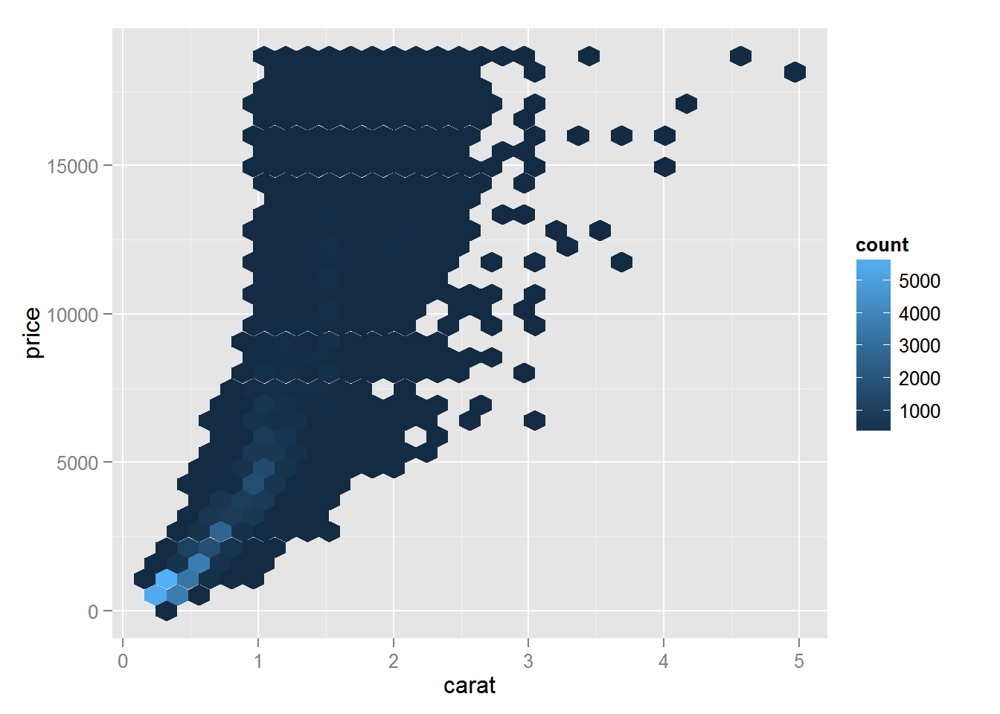
Here, each bin represents a segment of the plotting surface with lighter blue colors representing more density in that segment. The number of bins can be adjusted as an argument to the geom_hex() function. This is one method of solving the overplotting problem we have in this plot.
ggplot(diamonds, aes(carat, price)) + geom_hex(bins=50)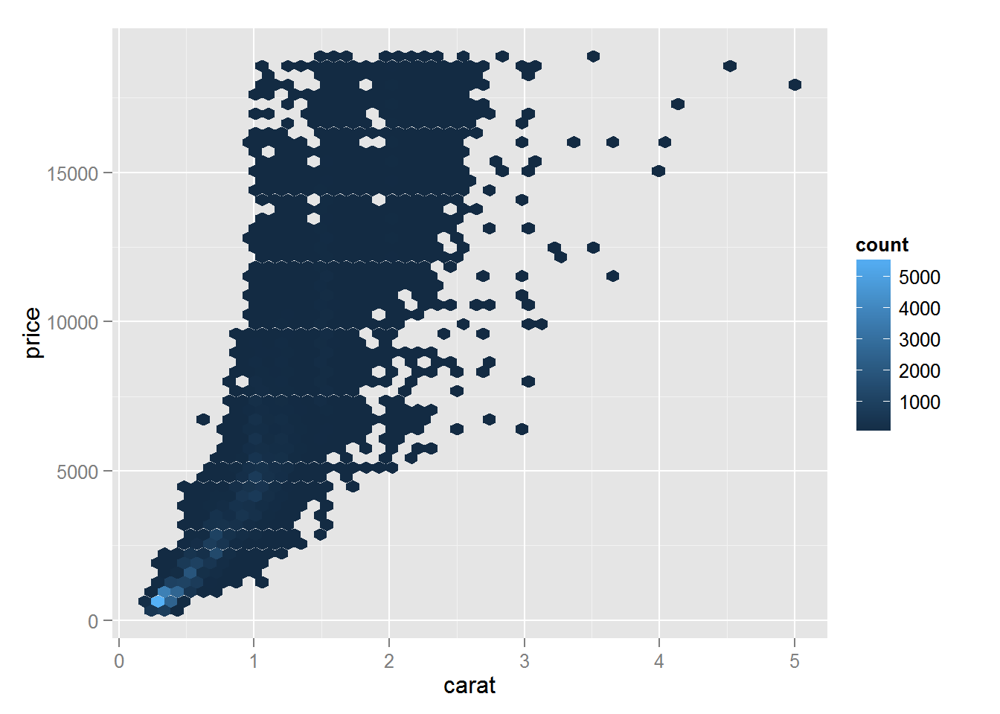
Another method, here using points again, is to lower the opacity of each point. Here, alpha=1/5 sets the opacity of each point to 20%. In other words, 5 points would have to overlap to result in a completely solid point. Note that in this case we’re not mapping the alpha level aesthetic to some other variable as we did above with color – we’re setting it to a static value of 0.20 for all points in the layer.
ggplot(diamonds, aes(carat, price)) + geom_point(alpha=1/5)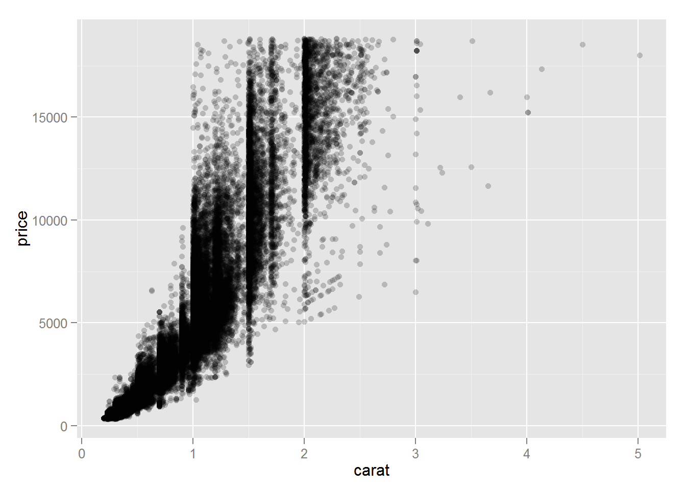
We can easily add more layers to the plot. For instance, we could add another layer displaying a smoothed conditional mean using the geom_smooth() function.
ggplot(diamonds, aes(carat, price)) + geom_point() + geom_smooth()## geom_smooth: method="auto" and size of largest group is >=1000, so using gam with formula: y ~ s(x, bs = "cs"). Use 'method = x' to change the smoothing method.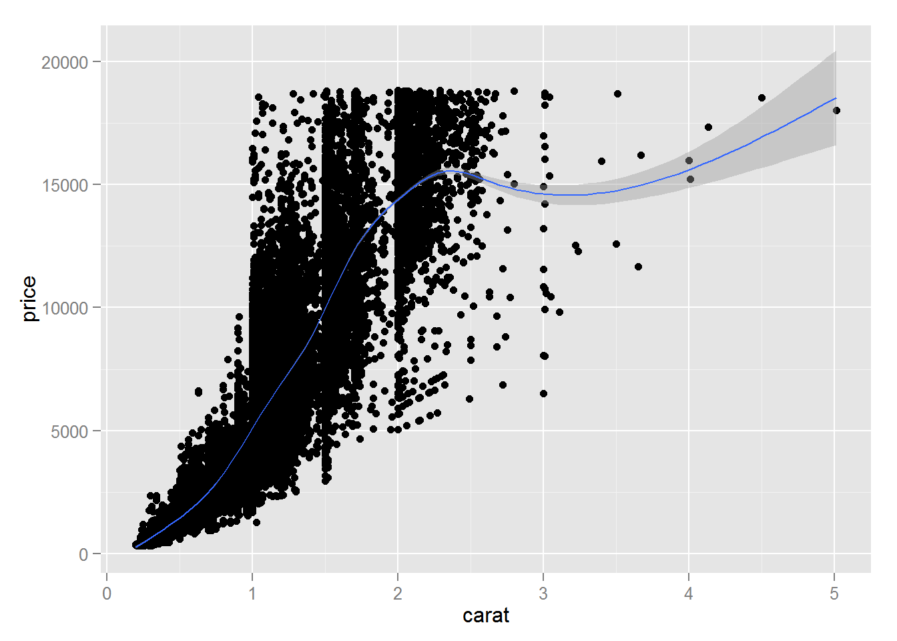
We’ll get a message telling us that because we have >1,000 observations we will default to using a generalized additive model. We could easily plot a straight line by specifying that we want a linear model (method="lm") instead of a generalized additive model, the default for large datasets.
ggplot(diamonds, aes(carat, price)) + geom_point() + geom_smooth(method="lm")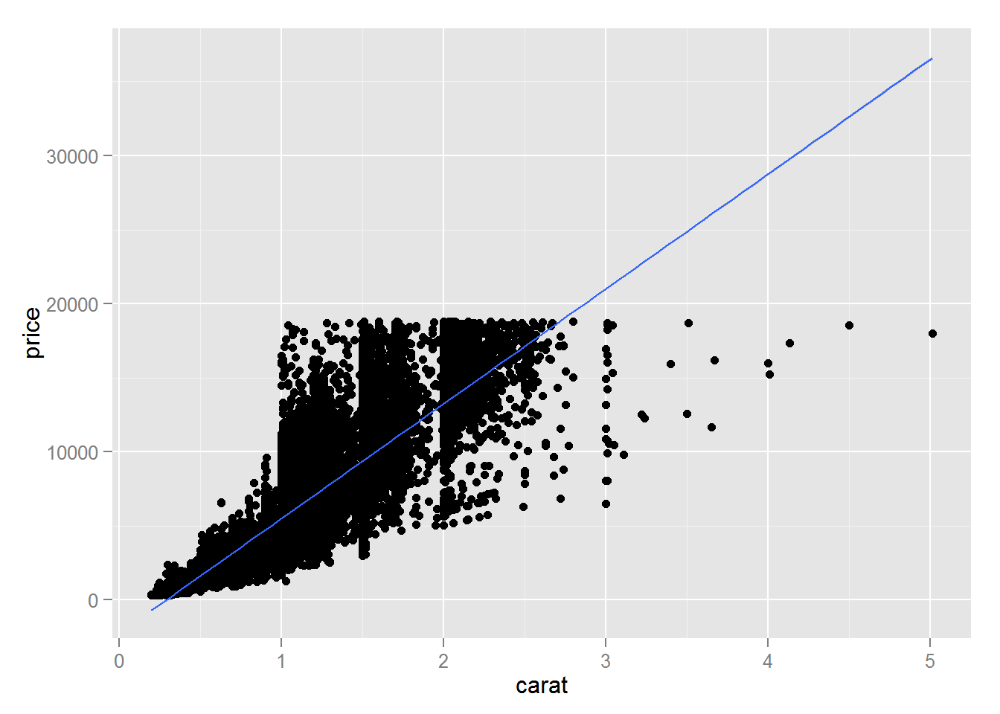
We see again the strong relationship between the size of the diamond and its price, but the relationship doesn’t appear linear. How does the diamond’s clarity affect the weight-price relationship?
Faceting and scaling
One option we could use is to color-code the points by their clarity. Here, we add another aesthetic, colour (col) and map it to the variable we want it to represent: clarity
ggplot(diamonds, aes(x=carat, y=price, col=clarity)) + geom_point()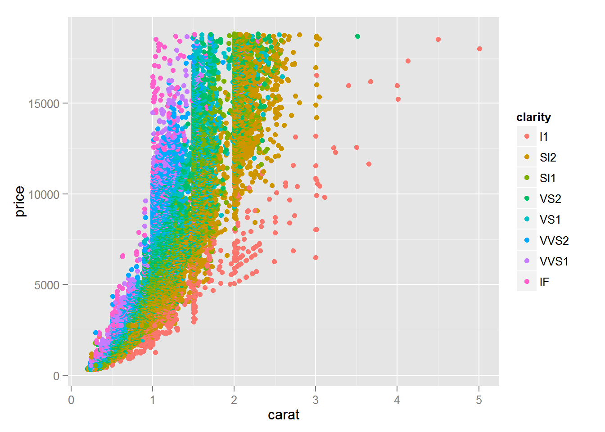
Examining the plot you can see that poor-clarity diamonds (included, small inclusions, etc) fetch a lower price per carat relative to more clear diamonds (very small inclusions, internally flawless, etc). We can see that ggplot2 color-codes the points using a sensible default color scheme, and automatically draws a legend on the side for us. This requires a good deal of extra error-prone coding using base graphics.
However, with 54,000 points on this plot, there is a good deal of overplotting that obscures how clarity affects the nature of the weight-price relationship. How else might we visualize this data? This is where a series of small multiples is helpful. The idea of small multiples was popularized by data visualization expert Edward Tufte. The idea is that you create a large grid of small plots, where each plot shows a particular facet of the data. Here, each plot in the grid might be price vs. carat for each particular clarity level. You explain to your audience the axes and how to interpret each plot only once, and the audience will immediately understand the rest of the plots.
This can be accomplished easily using ggplot2:
ggplot(diamonds, aes(x=carat, y=price)) + geom_point() + facet_wrap( ~ clarity)Here, the facets argument expects a forumla object that’s constructed with the ~ operator. Here, we’ve plotted the price vs. weight separately for each level of clarity. We can see what we suspected before. With dirty diamonds (included, and perhaps small inclusions), the weight-price relationship is linear or slightly quadratic. Large diamonds can be purchased rather cheaply. But for very clear diamonds (internally flawless), the relationship is quadratic or even exponential.
Let’s examine the weight-price relationship for various color ratings:
ggplot(diamonds, aes(x=carat, y=price)) + geom_point() + facet_wrap( ~ color)Here we see that for whiter diamonds (D, E, F) the price rises more quickly with increasing weight than for yellower diamonds (H, I, J).
We can further facet the plot across two different categorical variables using the same syntax:
ggplot(diamonds, aes(carat, price)) + geom_point() + facet_grid(clarity ~ color)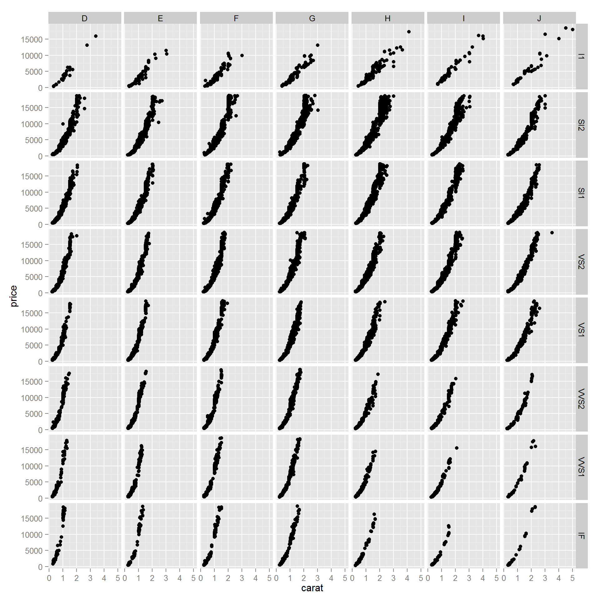
Here we see that the price per carat rises very steeply for very white, very clear diamonds, while the relationship is nearly linear for yellower, more flawed diamonds. We can see that a perfect white diamond averages around $15,000 while a yellow included diamond can be had for only around $2,000.
Finally, we can combind both color-coding and faceting in the same plot. Let’s use the same faceting scheme as last time, but color the points by the quality of the diamond’s cut.
ggplot(diamonds, aes(x=carat, y=price, col=cut)) +
geom_point() +
facet_grid(clarity ~ color)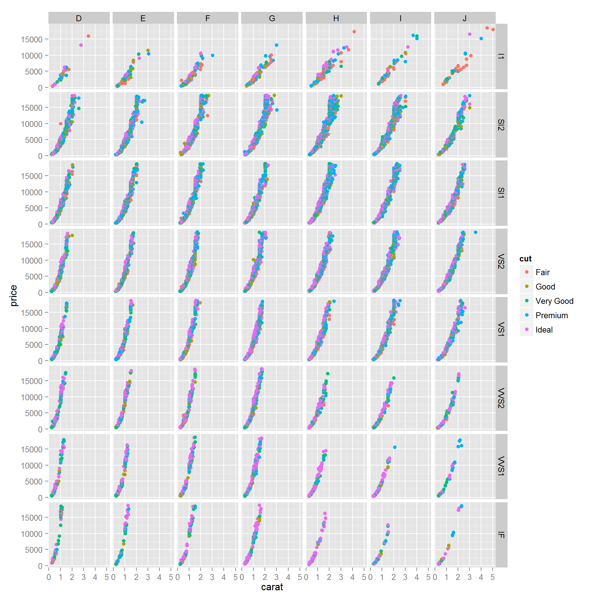
This color-coding reveals that clearer, whiter diamonds generally have higher quality cuts, but the relationship doesn’t appear strong, visually. Looking down the plot toward clearer diamonds you start to see more “Ideal” cuts than at the top, which are the more included diamonds.
What we’ve done here in addition to faceting is map a feature of the data (here, the cut quality) onto a scale (here, color). This behavior will work differently depending on whether you’re looking at categorical or continuous variables. We can also map features to other scales such as size=, shape=, linetype=, or even transparency using alpha=. All of these different scales can be combined with each other or with facets, and give you an extremely powerful and easy-to-use graphical toolbox for exploratory data analysis.
By combining multiple layers with aesthetic mappings to different scales, ggplot2 provides a foundation for producing a wide range of statistical graphics beyond simple “named” plots like scatter plots, histograms, bar plots, etc.
How about a stacked histogram, mapping the fill color of the stacked histogram to levels of the clarity variable:
ggplot(diamonds, aes(price, fill=clarity)) +
geom_histogram(position="fill", binwidth=200)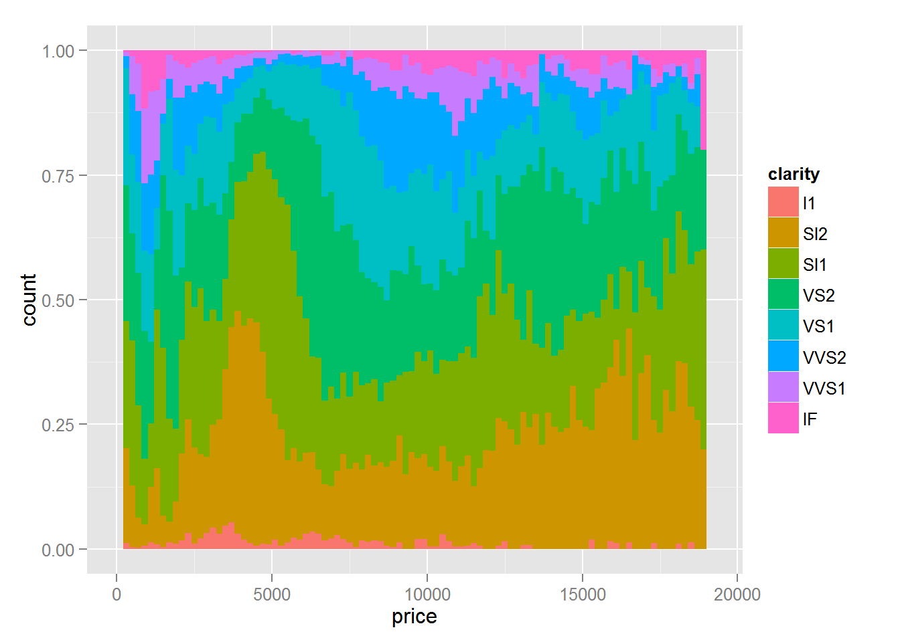
Or what about box plots of the price grouped separately by the quality of the cut, color-coded by the color of the diamond, with the price on the y-axis being on the log (base 10) scale? Simple:
ggplot(diamonds, aes(cut, price)) + geom_boxplot(aes(fill=color)) + scale_y_log10()Or what about a kernel density plot (think about a smooth histogram) of the diamond’s depth in different semitransparent curves with the color fill mapped to each level of cut, limited to depths between 55 and 70, with a title and a proper axis labels? This also shows the syntax of building up a plot one step at a time. We first initialize the plot with ggplot, giving it the data we’re working with, and aesthetic mappings. We then add a geom_density layer, limit the x-axis displayed, and finally give it a title and axis labels. The plot is in the g object here; we can simply enter g and the plot will be displayed.
g <- ggplot(diamonds, aes(depth, fill=cut))
g <- g + geom_density(alpha=1/4)
g <- g + xlim(55, 70)
g <- g + ggtitle("Depths by Cut Quality")
g <- g + xlab("Depth") + ylab("Density")
g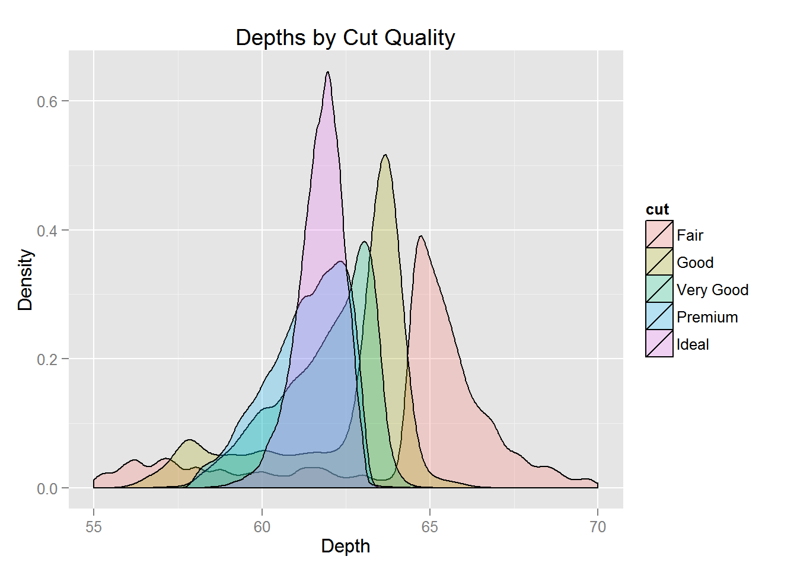
Finally, we can save the plot created using the ggsave function:
ggsave(filename="table-depth-density.png", plot=g)There are endless ways to combine aesthetic mappings with different geoms and multiple layers. Read about other geoms, mappings, scales, and other layer options at the links below.
Exercise
Now, plot a graph using the iris dataset using ggplot2. You don’t have to use points; other geoms include: gemo_bar, geom_area, geom_boxplot, and many more. Try to incorporate at least one extra aesthetic (over x and y). Some examples of aesthetics are col, fill, size, shape, alpha, linetype.
ggplot(dat, aes(x=Petal.Length, y=Petal.Width, col=Sepal.Width, size=Sepal.Length)) +
geom_point() +
geom_smooth(method="lm") +
facet_wrap(~ Species)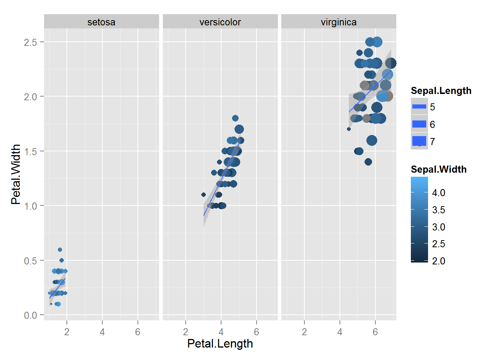
ggplot(dat, aes(x=Petal.Length)) + geom_histogram() + facet_wrap(~Species)## stat_bin: binwidth defaulted to range/30. Use 'binwidth = x' to adjust this.
## stat_bin: binwidth defaulted to range/30. Use 'binwidth = x' to adjust this.
## stat_bin: binwidth defaulted to range/30. Use 'binwidth = x' to adjust this.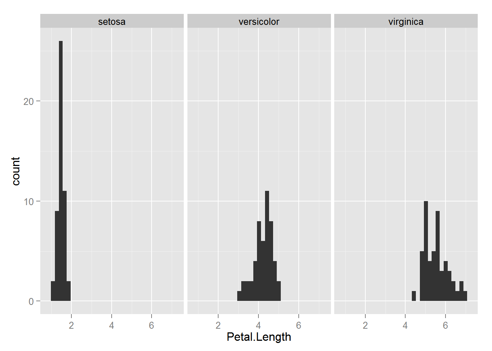
ggplot(dat, aes(x=Petal.Length, fill=Species)) +
geom_histogram(position="dodge", binwidth=0.1)
ggplot(dat, aes(x=Petal.Length, fill=Species)) +
geom_density(alpha=0.5)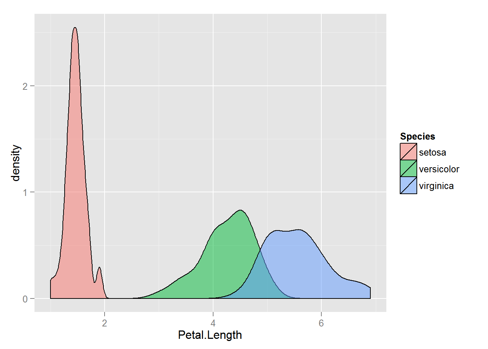
ggplot(dat, aes(x=Species, y=Sepal.Length)) + geom_boxplot()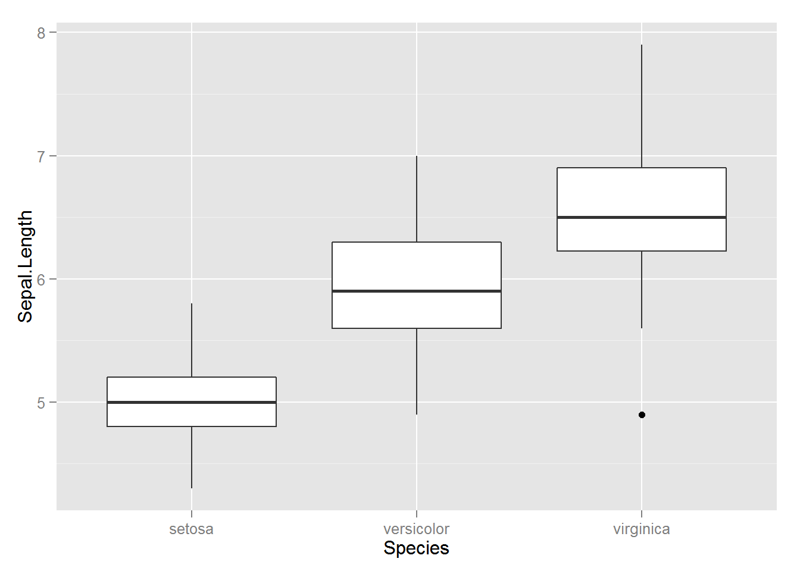
ggplot(dat, aes(x=Species, y=Sepal.Width, fill=Species)) + geom_violin()## Warning: Removed 5 rows containing non-finite values (stat_ydensity).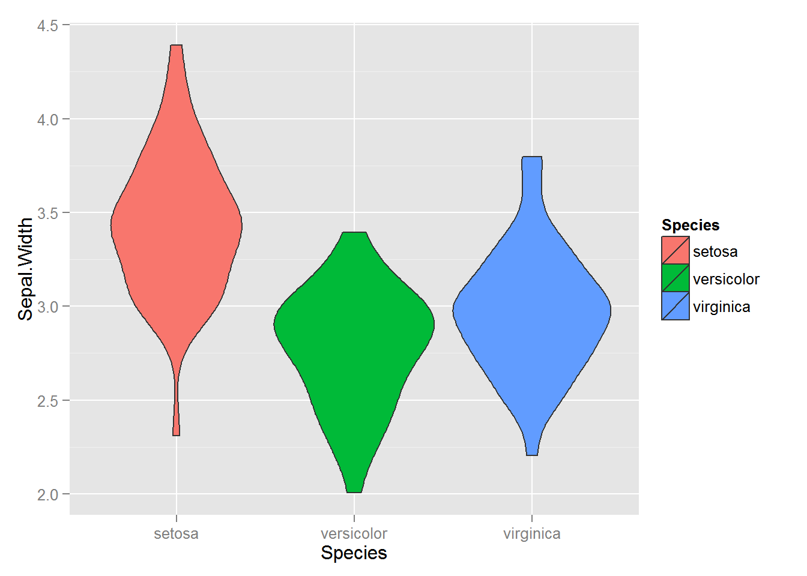
What if we want to split up the measurements and compare them all? We need the type of measurement (Petal.length, Petal.Width) as a variable rather than each as a column heading. There is another package by Hadley Wickham (see a trend here?) that helps us restructure, or reshape our data: It’s called reshape2.
require(reshape2)## Loading required package: reshape2dat_long <- melt(dat)## Using Species as id variableshead(dat_long)## Species variable value
## 1 setosa Sepal.Length 5.1
## 2 setosa Sepal.Length 4.9
## 3 setosa Sepal.Length 4.7
## 4 setosa Sepal.Length 4.6
## 5 setosa Sepal.Length 5.0
## 6 setosa Sepal.Length 5.4ggplot(dat_long, aes(x=variable, y=value, fill=Species)) + geom_boxplot()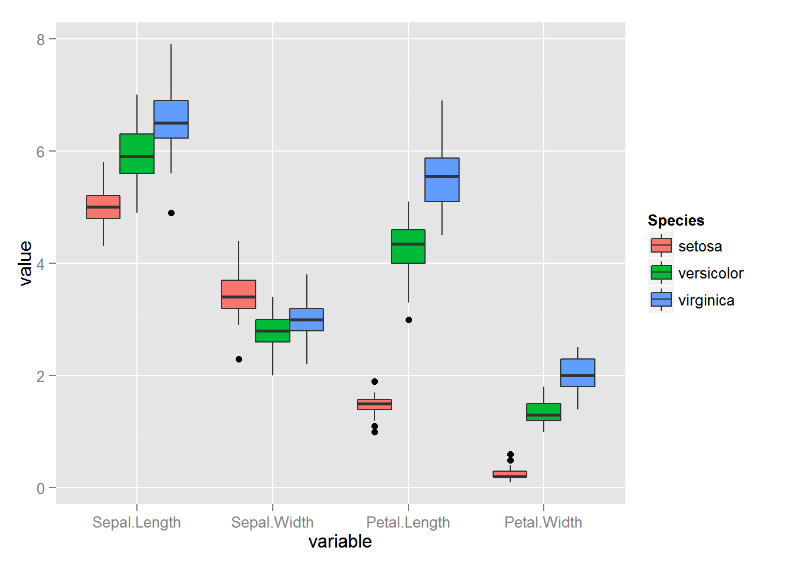
ggplot(dat_long, aes(x=variable, y=value, fill=Species)) + geom_boxplot()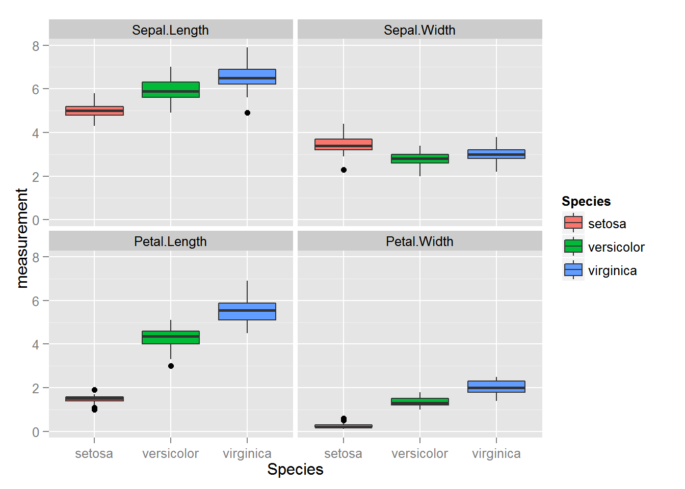
ggplot(dat_long, aes(x=Species, y=value, fill=Species)) +
geom_violin() +
facet_wrap(~ variable) +
ylab("Measurement (cm)")
Further ggplot2 resources
- The official ggplot2 documentation
- The ggplot2 book, by the developer, Hadley Wickham
- The ggplot2 Google Group (mailing list, discussion forum).
- Intermediate Software Carpentry lesson on data visualization with ggplot2.
- A blog with a good number of posts describing how to reproduce various kind of plots using ggplot2.
- Thousands of questions and answers tagged with “ggplot2” on Stack Overflow, a programming Q&A site.